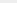

Where are you right now?
Five quick questions. We'll route you to the right starting stage and light up the pipeline so you can see what's downstream.
Decision Lenses
Three cross-cutting decisions show up repeatedly across the stages. Read them once here; they're also embedded inline where they matter most.
⚠ Lens A — Managed Environments: the licensing reality
Turning on Managed Environments creates a per-user premium-license requirement for everyone who actively uses an app or standalone cloud flow in that environment. Plan for the cost before you flip the switch.
- Every active user needs one of: Power Apps Premium, Power Automate Premium, a qualifying Dynamics 365 Enterprise license, or a capacity-based plan allocated to the environment — specifically Power Apps per-app passes for apps and Power Automate per-flow plans for flows. Microsoft Copilot Studio licenses also include Managed Environments as an entitlement (per the licensing FAQ enumeration: “Power Apps Premium, Power Automate Premium, Microsoft Copilot Studio, Power Pages, and Dynamics 365 licenses”).
- A user running both an app and a flow in the same Managed Environment only needs one premium license, not both.
- Pay-as-you-go is not a substitute — this surprises people. PAYG is a consumption-billing model (Azure meter pays for premium connector / Dataverse / AI Builder usage in the environment). It is not a per-user entitlement to Power Apps Premium or Power Automate Premium features. Per the licensing FAQ verbatim: “enabling pay-as-you-go for a Managed Environment isn't sufficient to meet Managed Environments licensing requirements” when (a) users without standalone Power Apps licenses use Power Apps in that environment, or (b) users without standalone Power Automate licenses (or per-flow licenses) use flows there. PAYG sits alongside the per-user requirement, not in place of it. Capacity-based plans (per-app passes, per-flow plans) do satisfy it — those are pre-purchased capacity assigned to the environment, which is a different mechanism from PAYG.
- Copilot Studio agents follow the same Managed-Env entitlement rule for their authors / makers, with their own consumption track for end-user interactions (Copilot Studio messages / message packs / PAYG Copilot Credits). Agent flows are Power Automate flows and inherit the Power Automate side of the requirement. Treat agent makers the same as app makers for licensing reconciliation; treat end-user agent traffic as a separate capacity line item.
- Dynamics 365 Pro Power Apps capabilities only count within the context of that Dynamics 365 app — they don't broadly satisfy Managed Environments licensing. Trial licenses count, subject to their own time limits.
- Notification timeline (per the licensing FAQ): admins began receiving notices via the Microsoft 365 Message Center in March 2026, with PPAC → Actions → Recommendations alerts following in April 2026 — both active today. End users without an appropriate license begin seeing in-app license-request notifications in June 2026; their requests land in PPAC → Actions → Recommendations and Microsoft 365 admin center → Billing → Licenses → Requests.
- How to check who needs a license: PPAC → Licensing → Power Apps → Summary tab → Download report → Usage type = Users requiring licenses in Managed Environments.
learn.microsoft.com/en-us/power-platform/admin/managed-environment-licensing →
⚖ Lens B — Cost-vs-value decision lens
Managed Environments unlocks the governance capabilities the zones model depends on (sharing limits, weekly digests, usage insights, solution checker enforcement, IP firewall, customer-managed keys, environment routing, the default-env cleanup recommendation). The cost is real: it elevates every active user to a premium-license requirement.
- Make it Managed when the environment hosts Zone 2 / Zone 3 workloads, business-critical apps, premium connectors, or solutions you'd be willing to license users for anyway.
- Keep it Unmanaged when the environment is a Zone 1 personal-productivity space whose makers and users are M365-licensed only, and whose apps stay inside Microsoft 365 connectors. Use tenant-level DLP + sharing limits as the guardrail.
- In between? Pull the active-user count in the candidate environment, multiply by the per-user premium SKU price, compare against (a) the operational cost of governing it manually and (b) the risk-reduction value of the controls you'd unlock. If the math is close, prefer Managed for anything touching shared business data; prefer Unmanaged for true personal sandboxes.
💾 Lens C — Default-environment cleanup track
Default environments accumulate apps and flows because every M365 user is auto-added as a maker. Some are in active use; many are abandoned learning experiments. Triage signal categories drive remediation:
- Production-like sharing or sensitive data → move to the right zone.
- Uses connectors that conflict with current/planned DLP → move or remediate.
- No usage in N days, owner non-responsive → quarantine, then delete.
- One-off learning artifact → delete (offer backup export).
Manual cleanup: PPAC → Actions → Recommendations → “Improve environment hygiene by moving the production apps out of the default environment” → pick an app → View Details → Move → pick destination Managed Environment → choose stakeholder notifications → decide what to do with the original (None · Quarantine · Delete).
Automated cleanup (bulk): Power Platform for Admins V2 connector cloud flow — Get Recommendations → Get Recommendation Resources → loop and run Migrate to Managed Environment (Recommendation name: Secure high-value apps with premium governance; Action name: Migrates an application to a Managed Environment; API version: 2022-03-01-preview).
Preview limits (per learn doc): canvas apps and SharePoint forms only, and only those that don't use any shared connectors or resources; users must be added in the target environment and the app re-shared; the original remains accessible with a “moved” banner unless quarantined or deleted.
Prerequisites: system / tenant admin, PPAC access, a Managed Environment as destination — loops back to Lens A (licensing) and Lens B (cost-vs-value).
learn.microsoft.com/en-us/power-platform/admin/move-apps-from-default-environment →
🤖 Lens D — Admin-agent ground rules (read before you build)
Each stage below carries a "Pro Tip" for standing up a small admin agent. The tips are real — grounded in the actual Environment Management MCP server tools and the Power Platform admin connectors. A few cross-cutting cautions:
- Pick the right surface. The MCP server is read-only environment lifecycle. Execution flows through one of: Power Apps for Admins (highest throttle at 1000/60s for app sweeps; only home of
Set App Quarantine State,Set App Owner, conditional access), Power Automate Management (only home ofRestore Deleted Flow as AdminandList Flows as Admin (V2)with suspension data), Power Automate for Admins (only home ofEnable / Disable / Remove Flow as Admin), or the Power Platform for Admins V2 connector (Recommendations, Rule Sets, BCDR, KQL, Managed Environments toggle). - Throttling differs sharply. Power Apps for Admins: 1000/60s. V2 connector and Power Automate for Admins: 100/60s. Power Apps for Makers: 100/60s. Power Automate Management: 5 GET/60s and 300 non-GET/3600s (lowest — design tight pacing). Tenant-wide sweeps must paginate and cache.
- Auth gotchas. V2 connector billing-policy actions and Power Automate for Admins user-detail actions require interactive OAuth — Service Principal is not supported there.
Get recommendationsrequires Managed Environments enabled on at least one environment. - The agent itself is a governed asset. If it runs in a Managed Environment, its service account / owner needs a premium license too (Lens A). Treat the agent as a Zone 3 asset — ALM, source-controlled, change-reviewed.
See What You Have
Week 1Let the Recommendations engine tell you what's broken
PPAC → Actions → Recommendations is a prioritized, severity-ranked, tenant-scoped checklist of the most impactful governance gaps Microsoft can detect on your tenant. It is the single highest-leverage screen in the admin center and the natural iteration loop for the entire 90-day plan — an Admin should refresh this list on a cadence (weekly at minimum) and treat it as the running scoreboard.
- Severity-driven triage: High → Medium → Performance. Work top-down, snooze with reason, dismiss only when justified (an audit trail lives in Action history).
- Maps directly to this guide: tenant isolation, IP firewall, sharing controls, owner assignment, guest user lockdown, auditing, and “Maintain tenant hygiene by cleaning up unused apps” — the same default-env sprawl Lens C addresses.
- Affected-resource counts on each row tell you the blast radius before you act — a 325-app hygiene recommendation is a multi-week program; a 1-tenant Lockbox toggle is a same-day fix.
- Don't dismiss without reason. Snooze for a planned remediation window; dismiss only when the recommendation genuinely doesn't apply (e.g., no guest users by policy).

Actions
💾 Lens C (part 1) — How to think about the default-environment cleanup
Tag candidates by connectors used, owner department, and last-run date so the eventual move is batchable. Apply the same triage to apps, flows, Copilot Studio agents, and agent flows — the asset class changes the remediation tool, not the decision logic. Triage into four buckets: move (production-like), move or remediate (DLP conflict), quarantine then delete (no usage, owner unresponsive), delete with optional backup export (learning artifact). Keep a lightweight comms plan: announce → migrate → confirm.
Note on the PPAC preview wizard: in preview, the “Improve environment hygiene…” recommendation only relocates canvas apps and SharePoint forms. Standalone cloud flows, Copilot Studio agents, and agent flows must be moved manually (re-create in target env / export-import solution) or remediated in place (quarantine bot, disable flow). Plan the agent + flow cleanup as a parallel programmatic track, not via the wizard.
Inventory & Sprawl Agent
Stand up a scheduled flow + MCP-backed agent that produces a weekly digest covering all four asset classes (apps, flows, Copilot Studio agents, agent flows). Don't click through PPAC for this.
- For tenant-wide questions (“which environments are unmanaged?”, “which environments host bots?”):
Query Power Platform resourceson the V2 connector (KQL over Azure Resource Graph — agents/bots appear in the resource graph alongside environments). - For deep app inventory:
Get Apps as Adminon Power Apps for Admins (1000/60s throttle — much faster than V2 for tenant sweeps). - For flow inventory including agent flows with suspension + soft-delete signal:
List Flows as Admin (V2)on Power Automate Management withexpandSuspensionInfo=trueandincludeSoftDeletedFlows=true. Agent flows are surfaced by these admin endpoints alongside standalone cloud flows. - For Copilot Studio agent inventory: the V2 connector exposes admin-scope bot actions (
Set Bot as Quarantined / Unquarantined,Delete a bot in Copilot Studio); for enumeration, combineQuery Power Platform resourceswith the bot rows in Dataverse (bottable) via the Dataverse Web API. - MCP-backed agent narrates the merged result and posts to a Teams channel.
Lock the Front Door
Week 2Actions
Connector & Capacity Watch Agent
Schedule a flow that detects new custom connectors, over-shared connections, capacity threshold breaches, and newly published Copilot Studio agents week-over-week. The connectors classified at tenant DLP scope apply equally to connectors invoked from agent flows.
Get Custom Connectors as Admin+Get Connections as Admin+Get Connection Role Assignments as Adminon Power Apps for Admins — find broadly-shared connections (these surface connections used by agent flows too, since agent flows are flows).Storage warning thresholds+Get tenant capacity details+Generate / Get cross-tenant connection reporton the V2 connector — capacity + boundary signal.- Bot remediation:
Set Bot as Quarantined(V2 connector) to freeze a misconfigured agent before it spreads;Set Bot as Unquarantinedto release;Delete a bot in Copilot Studioas the last resort. These are the only programmatic levers for agents at admin scope today. - MCP-backed agent summarizes deltas and opens a Teams card on threshold breach, new cross-tenant connection, or new agent surfacing premium connectors.
- DLP policy reading isn't in any of these surfaces — keep DLP work in PPAC and Purview.
Define Your Zones
Week 3–4Actions
⚠ Lens A — Licensing reality (recap)
Managed Environments = per-user premium-license requirement for every active user. Reconcile with the Users requiring licenses in Managed Environments PPAC report before you flip the switch.
⚖ Lens B — Cost-vs-value test (recap)
Zone 2 / Zone 3 → Managed. Zone 1 personal sandbox with M365-only makers → Unmanaged + tenant DLP + sharing limits. In between → multiply active users × premium SKU and weigh against governance-gain.
Zone Conformance Agent
Once zones are modelled as environment groups, diff each group's actual rules against the documented zone policy.
List Rule Sets for Tenant+Get Rule Set for Environment Group+List rule based policy assignments for a specific environment groupon the V2 connector — rule diff.Set PowerApp Conditional Accesson Power Apps for Admins — programmatic Entra Conditional Access enforcement that matches the zone's identity story.- MCP server provides a natural-language window into environment management settings per environment.
- Route drift findings to the zone owner.
Route Makers Automatically
Week 5–6Actions
💾 Lens C (part 2) — Execute with the PPAC preview
Manual cleanup: PPAC → Actions → Recommendations → “Improve environment hygiene by moving the production apps out of the default environment” → pick an app → View Details → Move → choose destination Managed Environment → notify stakeholders → decide what to do with the original (None · Quarantine · Delete).
Automated (bulk) cleanup: Power Platform for Admins V2 connector — Get Recommendations → Get Recommendation Resources → loop and run Migrate to Managed Environment (Recommendation: Secure high-value apps with premium governance; Action: Migrates an application to a Managed Environment; API version 2022-03-01-preview).
Preview limits (verbatim from learn doc): canvas apps and SharePoint forms only, and only those that don't use any shared connectors or resources; users must be added in the target environment and the app re-shared; if the original isn't quarantined or deleted, users can still access it but see a “moved” banner.
Prerequisite: a Managed Environment exists as the destination — loops back to Lens A (licensing) and Lens B (cost-vs-value) before pulling the trigger.
Default-Env Cleanup Agent
Three connectors collaborate for batch-safe cleanup:
- V2 connector:
Get Recommendations→Get Recommendation Resources→Migrate to Managed Environment(recommendation Secure high-value apps with premium governance, API2022-03-01-preview) per approved candidate. Toggle destination Managed Environments viaEnables managed governance for the specified environment. UseQuery Power Platform resources+Get apps as administratorto pre-rank candidates by ownership, last-modified, sharing. - Power Apps for Admins: before deletion,
Set App Quarantine State=Quarantinedon abandoned apps for a cool-off period.Set App Ownerto a service identity when the original owner has left.Remove App as Adminwhen cool-off elapses without recall. - Agents + agent flows (parallel programmatic track — the PPAC wizard doesn't move them in preview): for Copilot Studio agents use V2
Set Bot as Quarantinedfor cool-off, thenDelete a bot in Copilot Studioafter grace. For agent flows (they're flows):Disable Flow as Admin(Power Automate for Admins) for cool-off, thenRemove Flow as Admin. To move agents/flows to a Managed Env, export them in a solution from source and import in target (no wizard support yet). - Reconciliation step (don't skip): after each wizard-driven app move, query
Retrieve cloud flows with filters(V2) in the source and destination environments and diff against the app's dependency list (the app's exported solution manifest, or itsconnectionreference/workflowrows in Dataverse). Flag any dependent flow still in the source env as a follow-up migration candidate — otherwise the app calls home to the default env. - Respect throttling (1000/60s on Power Apps for Admins, 100/60s on V2) and preview limits (canvas + SharePoint forms only via the wizard, no shared connectors/resources).
Operationalize Change
Week 7–8Actions
Change Notification Agent
Detect new PPAC recommendations on a schedule; classify by release ring.
Get recommendationson the V2 connector — scheduled poll.- MCP-backed agent classifies each recommendation by impact tier and produces a ring-aware digest (R0 → R1 → R2) for each zone owner.
- M365 Message Center is a separate surface — use the M365 Message Center connector if you wire that piece in.
Ship via ALM
Week 9–10Actions
Pipeline & Flow Hygiene Agent
Surface flows nearing suspension, stuck runs, and connector-policy violations across critical environments.
List Flows as Admin (V2)on Power Automate Management withexpandSuspensionInfo— surface flows nearing suspension.Retrieve flow actions with filters+Retrieve flow runs by workflow IDon V2 — stuck/failed runs.- Remediate:
Disable Flow as Admin/Enable Flow as Adminon Power Automate for Admins;Cancel Flow Runon Power Automate Management;Restore Deleted Flow as Adminfor accidental deletions. - MCP server adds environment/zone context via
Get environment by ID. Post Teams card to solution owner.
Measure & Tune
Week 11–12Actions
⚠ Lens A — Ongoing compliance
The licensing-compliance signals are not one-time. End-user in-app license-request prompts (live from June 2026) generate a recurring queue in PPAC → Actions → Recommendations and M365 admin → Billing → Licenses → Requests. Make reconciliation a monthly cadence, not a quarterly one.
Licensing & Capacity Compliance Agent
Schedule a flow that joins per-flow capacity telemetry against the Managed-Env license report.
Get user per flow capacity source+Get tenant context summary for user per flow capacity sourceon the V2 connector — returns users exceeding capacity, users without a license, users without a premium license using premium features.- Join against the PPAC Users requiring licenses in Managed Environments report (downloaded separately).
- Route findings to the user's manager or M365 admin → Billing → Licenses → Requests. Reinforces Lens A.
BCDR Drill Agent
Quarterly recovery-posture verification for Zone 3 environments.
- MCP server:
Gets business continuity snapshot+Lists the environment lifecycle operations— verify recovery posture. - V2 connector:
Performs DR Drillon a quarterly cadence for Zone 3 environments. - Agent records the result and posts to the platform-owner channel.
Leaver / Offboarding Agent
When HR signals a departure, sequence reassignment, disablement, and audit-trail in a single run — across all four asset classes the departing user touched.
- Find & reassign cloud flows + agent flows:
List Flows as Admin (V2)filter by creator userId, thenModify Flow Owners as Adminon Power Automate Management → reassign to service identity or manager. (Agent flows surface here too — they're flows.) - Find & transfer apps:
Get Apps as Admin+Set App Owneron Power Apps for Admins; set old owner's residual role toCanViewor strip them entirely. - Copilot Studio agents: the V2 connector has no
Set Bot Owner. Two-step approach — (1) reassign agent ownership by updating thebotDataverse row'sowneridvia the Dataverse Web API (or Copilot Studio UI for a small number); (2) for agents that should not survive the transfer,Set Bot as Quarantined(V2) pending review, thenDelete a bot in Copilot Studio(V2) after grace period. - Disable non-survivor flows:
Disable Flow as Adminon Power Automate for Admins pending review;Remove Flow as Adminafter grace period. - GDPR cleanup:
Remove Flow User Detailson Power Automate for Admins — interactive auth only (Service Principal not supported). - Post a single audit card listing everything reassigned, disabled, or removed — apps, flows, agents, and agent flows in one place.